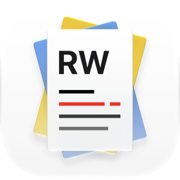

A native macOS literature manager for CS researchers.
Organize papers, annotate with cross-references, and generate
Related Works sections — powered by local AI via Ollama.
@cross-reference annotationsrelatedworks:// URIsRequires macOS 13+ and Ollama running locally.
RelatedWorks ships a full interactive TUI — perfect for keyboard-driven workflows, SSH sessions, or when you prefer staying in the terminal. The TUI shares all data with the GUI in real time.
$ swift run RelatedWorks ┌──────────────────────────────────────────────────┐ │ RelatedWorks — Projects │ ├──────────────────────────────────────────────────┤ │ › [a1b2c3d4] My Survey Paper (5 papers) │ │ [e5f6a7b8] LLM Efficiency Study 3 papers │ ├──────────────────────────────────────────────────┤ │ ↑↓ navigate Enter select q quit │ └──────────────────────────────────────────────────┘